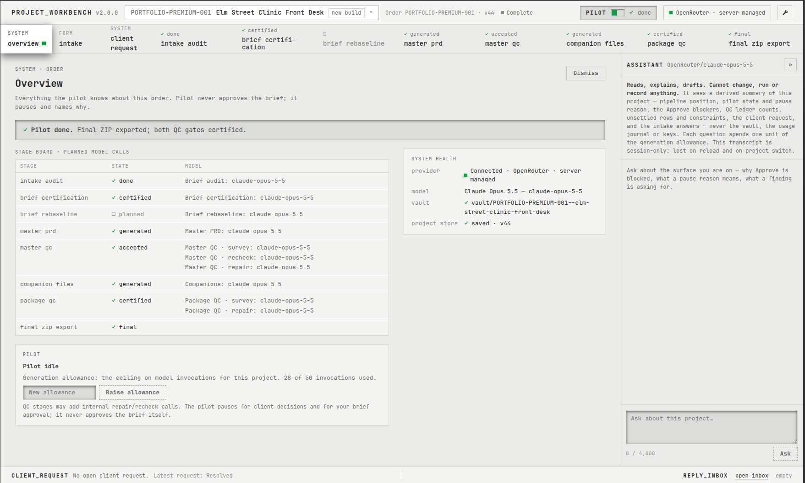

PROJECT_WORKBENCH is a single-operator workbench I built with AI coding agents. It audits a client's answers, freezes scope on a human approval, generates one Master PRD where every requirement traces back to something the client said, has it certified by an independent reviewer, and packages handoff files for Claude Code, Codex, Cursor, Lovable and Replit.

A six-role family clinic (patients, receptionists, nurses, clinicians, a billing clerk and a practice manager) wants to replace phone booking, paper intake forms, hand-sent reminders and a no-show notebook. I wrote the order myself; it is a demonstration, not client work. Everything below is the pipeline's own output for it.
Each stage is a separate model call with its own structured output, validated on the server. An automated pilot drives the stages within a hard budget of model calls, and pauses, saying why, whenever a client decision or an approval is needed. It never approves anything itself.
The client's answers to 11 questions, stored verbatim and cited downstream as intake.F01 to F11.
Turns answers into numbered decisions, assumptions and open questions, and checks them against each other.
Passes only when zero questions remain unanswered.
The one act that freezes scope. Changes after this go through a rebaseline, never a silent edit.
One spec. Every requirement lists its approved sources, pass/fail criteria and milestone.
A reviewer in a fresh context files typed findings; repairs are surgical, then rechecked.
A handoff file per coding agent, derived from the accepted Master.
A second certification over the whole package.
Final ZIP with spec, handoffs, ledgers and diagrams. Drafts are stamped so they can't pass as final.
The clinic's no-show rule, followed through every artifact the pipeline produced. The same chain exists for all 34 requirements.
Each draws only what the Master states: the steps in order, the conditions listed for that workflow, the failure state, and the requirements it satisfies.
Every requirement against its decisions, assumptions and business rules, grouped by milestone. It ships inside the client package as a single HTML file.
A read-only assistant sits beside every stage. It can explain why Approve is blocked or what a finding is asking for; it cannot change, run or record anything, and never sees keys.
Three demonstration orders, one per package, run end to end on the pipeline's own stages (baseline on claude-sonnet-5, 2026-09-18 and 19).
| Basic | Standard | Premium | |
|---|---|---|---|
| Subject | Dog walker's slots | Theatre box office | Clinic front desk |
| Provider calls | 21 | 21 | 36 |
| of which format repairs | 4 | 4 | 8 |
| Provider time | 42 min | 42 min | 70 min |
| Requirements / flows / screens | 15 / 6 / 5 | 35 / 7 / 6 | 34 / 8 / 7 |
| Estimated calls on a clean rerun | ~14 | ~17 | ~20 |
I traced every inflated number to a named cause and fixed it in the pipeline rather than working around it:
The pilot had no repair step after Package QC, so it looped on re-certification. It now plans the repair.
A reconciliation bug dropped the closure record of a client conflict, so the pause could never clear. Fixed.
The audit hit its output ceiling. The ceiling was raised.
Codebase (2026-09-24): ~74,000 lines of TypeScript and ~78,500 lines of tests across 165 test files (vitest and Playwright), 774 commits over about five weeks. The source is private; I'm happy to walk through it live.
The exact final package the pipeline exported for the sample order. Download the ZIP, or read any file on GitHub.